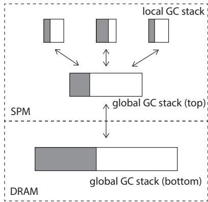
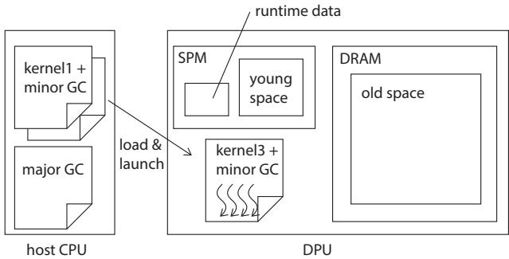
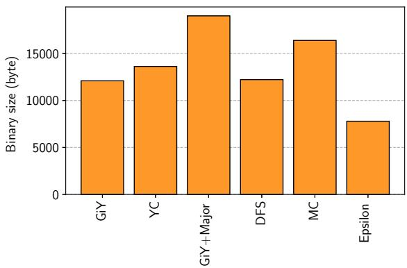

Gray-in-Young: A Generational Garbage Collection for Processing-in-Memory 通俗讲解¶
0. 整体创新点通俗解读¶
痛点直击 (The "Why")
这篇论文要解决的根本问题，是在 UPMEM PIM 这种新型硬件上，如何为 managed language（比如 Java）设计一个高效的 **Garbage Collector **(GC)。难点在于 DPU 的硬件特性非常“别扭”：
- 内存墙的另一面：DPU 有超快的 **Scratch Pad Memory **(SPM)，但主存 DRAM 只能通过 DMA 访问，速度极慢（一次小读写就要 ~70+ 周期）。传统 GC 频繁地、以指针大小为单位访问堆内存，在这里就成了灾难。
- 程序内存极度受限：DPU 的指令内存只有 24 KB。一个完整的 GC（尤其是 major GC）代码量很容易就超标，根本塞不进计算内核里。
- 必须并行：DPU 有 24 个硬件线程，但为了填满流水线，至少需要 11 个活跃线程。单线程 GC 会严重拖累性能。
之前的通用 GC 设计完全没考虑这些约束，直接搬过来会因为海量的 细粒度 DRAM 访问 而慢得无法接受，或者因为 代码太大 而根本无法运行。
通俗比方 (The Analogy)
想象你要搬家（做一次 GC）。你的新家（old space）在很远的郊区（DRAM），而你现在住在一个小但超级方便的市中心公寓（young space in SPM）。
-
**传统做法 **(Cheney's Algorithm) 就像你先把所有家具（对象 A）一股脑搬到郊区新家，然后再一件件检查，发现“哎呀，这张桌子（A）的抽屉里还有一把钥匙（指针）指向我公寓里的保险箱（对象 B）！”。于是你又得开车回市区（访问 DRAM），把保险箱（B）搬出来，再开回郊区更新桌子的记录。来回折腾，油费（DRAM 访问）贵死了。
-
这篇论文的做法 (Gray-in-Young) 则聪明得多。在你还在市中心公寓打包的时候，就先把所有要搬的东西列好清单，并且提前把所有“指向关系”都更新好。比如，你看到桌子（A）的钥匙指向保险箱（B），你就先在郊区给保险箱（B'）找个地方，然后立刻把桌子（A）上的钥匙换成新地址。等一切准备就绪，你一次性叫个大货车（DMA），把整张桌子（A）直接拉到郊区。整个过程，你只需要去郊区 N 次（N 是家具数量），而不是 N + 2NR 次（R 是每件家具平均有多少个指向其他家具的部件）。
 Figure 4. Copy with Cheney's copying algorithm; light gray objects may have pointers to young space, and dark gray objects do not have pointers to young space.
Figure 4. Copy with Cheney's copying algorithm; light gray objects may have pointers to young space, and dark gray objects do not have pointers to young space.
 Figure 5.Copy with GiY algorithm; white objects in old space are empty shells.
Figure 5.Copy with GiY algorithm; white objects in old space are empty shells.
关键一招 (The "How")
作者的核心思路是 “分而治之” + “预处理”，具体体现在三个精妙的设计上：
-
将 young space 放在 SPM，old space 放在 DRAM：
- 这利用了“大部分对象朝生暮死”的 generational hypothesis。新对象在超快的 SPM 里分配和初始化，极大加速了 mutator（用户程序）。
- Minor GC 只负责清理 SPM，目标明确。
-
**在 SPM 中完成所有指针更新 **(Gray-in-Young Algorithm)：
- 关键扭转：作者没有在对象被复制到 DRAM 后才去扫描和更新其内部指针，而是在对象还在 SPM 时就完成了所有指针的重写。
- 具体流程是：访问一个对象 -> 为其子对象在 DRAM 预分配空间 -> 立即用新地址更新当前对象的指针 -> 最后才用一次 DMA 把当前对象本身拷走。
- 这一招将 DRAM 访问次数从 O(NR) 降到了 O(N)，效果立竿见影。
-
**静态缓存对象布局信息 **(OLI Cache)：
- GC 扫描对象时需要知道哪些字段是指针，这通常需要查一个在 DRAM 里的 class table，又是一次 DRAM 访问。
- 巧妙之处：因为每次 minor GC 后 SPM 都是空的，所以一次 kernel 运行期间在 SPM 里创建的对象，其类型是完全可以在编译时确定的。
- 因此，作者在编译时就生成了一个只包含本次 kernel 所需类信息的 OLI cache，并把它加载到 SPM。GC 扫描时直接查这个本地缓存，彻底避免了这部分 DRAM 访问。
-
分离 major GC 二进制：
- 为了满足 24 KB 的代码限制，作者只把轻量级的 minor GC 代码链接到每个计算内核中。
- 当需要做 major GC 时，由 host CPU 动态加载一个独立的、包含完整 major GC 逻辑的二进制文件。这本质上是一种 program overlay 技术，用一点动态加载的开销，换来了宝贵的代码空间。
最终，这套组合拳打下来，成功地将 DRAM 访问减少了 85.9%，性能提升了 46.2%，并且代码占用仅 4.3 KB，完美适配了 DPU 的严苛环境。
1. Gray-in-Young (GiY) 算法 (ELI5)¶
痛点直击
- 传统的 Cheney's copying 这类垃圾回收算法，在将年轻代（Young Space）对象复制到老年代（Old Space）时，会先把对象拷贝到 DRAM，然后再去扫描这个新拷贝来更新它内部的指针。这在 UPMEM DPU 上是个灾难。
- 因为 DPU 访问 DRAM 必须通过 DMA，而 DMA 的启动开销巨大（一次读操作就有约 77 个周期的固定延迟）。如果每次只更新一个指针（比如 8 字节），就相当于用“快递”寄一张纸条，效率极低。
- 更糟的是，这种算法会导致 N + 2NR 次细粒度的 DRAM 访问（N 是存活对象数，R 是平均指针数）。对于一个有几百个对象的回收，这会产生成千上万次昂贵的、小颗粒的 DMA 操作，严重拖慢 GC 速度。
通俗比方
- 想象你要搬家（从 SPM 搬到 DRAM）。传统做法是：你先把所有箱子（对象）一股脑搬到新家（DRAM），然后站在新家里，挨个打开每个箱子，把里面写着旧地址的便签（指向其他对象的指针）一张张拿出来，查新地址，再写回去。
- Gray-in-Young (GiY) 的聪明之处在于：它在老房子（SPM）里就把所有事情都准备好了。它先给新家（DRAM）里的每个箱子预留好位置（分配内存），然后在老房子里，直接把箱子里的便签全部换成新地址。等一切就绪，它才一次性、整箱地把内容搬过去。这样，你只需要跑一趟（一次 DMA）就能搬完一个箱子，而且在新家完全不用再翻箱倒柜。
关键一招
- GiY 算法的核心扭转点在于 “指针更新”和“对象拷贝”的执行顺序与地点。
- 它没有像传统算法那样，把“灰色对象”（已发现但未扫描的对象）放在目标空间（DRAM）里，而是刻意让灰色对象留在源空间（SPM）中。
- 具体流程被拆解为两个清晰的阶段：
- 准备与遍历阶段：算法以 DFS 方式遍历 SPM 中的对象图。当访问到一个对象 O 时，它会立即为 O 在 DRAM 中的副本 O' 分配内存，但不拷贝内容。接着，它扫描 O 的每一个指针字段，为指针所指向的子对象也预先分配好 DRAM 内存，并立即将 O 中的指针更新为指向这些新的 DRAM 地址。此时，O' 在 DRAM 中只是一个“空壳”，但 O 在 SPM 中的所有指针已经是正确的了。
- 批量拷贝阶段：一旦对象 O 的所有指针都被更新完毕，它就变成了“黑色对象”（已扫描完毕）。这时，算法才发起一次 DMA 操作，将 O 的整个内容完整地拷贝到它在 DRAM 中早已准备好的位置 O' 上。
- 通过这个逻辑转换，GiY 将每个对象的 DRAM 访问次数从多次（扫描+多次指针更新）锐减到仅一次（最终的整体拷贝），从而极大地减少了昂贵的 DMA 操作总数。
Figure 5.Copy with GiY algorithm; white objects in old space are empty shells.
 Figure 7. GC stack
2. SPM中的对象布局信息（OLI）静态缓存 (ELI5)¶
痛点直击 (The "Why")
- 在 UPMEM DPU 上做 GC 时，一个隐藏的性能杀手是 对象扫描（object scanning）。当 GC 遍历一个对象以找出其中的指针时，它必须知道这个对象的“布局”——哪些字段是指针，哪些不是。
- 这个布局信息，即 对象布局信息（OLI），通常存储在一个全局的 类表（class table） 中。而这个类表因为太大，只能放在 DRAM 里。
- 问题来了：每次扫描一个在 SPM 里的年轻代对象，GC 都要发起一次 小粒度的 DRAM 访问 去取 OLI。根据论文数据，一次 DRAM 访问有高达 70+ 的固定延迟开销。如果一次 Minor GC 要扫描成百上千个对象，这些微小的、频繁的 DRAM 访问会累积成巨大的性能瓶颈。
通俗比方 (The Analogy)
- 想象你是一个图书管理员（GC），需要快速检查一批新到的书籍（年轻代对象）里是否夹带了借书卡（指针）。每本书的借书卡可能在不同的位置（比如第一页、最后一页或书脊里）。
- 以前的做法是，每拿到一本书，你就得跑回几公里外的中央档案馆（DRAM中的类表），查一下这本书的型号，才知道借书卡在哪。来回奔波，效率极低。
- 这篇论文的做法是：在开始整理这批新书之前，你就已经知道这批书只可能是《Java编程思想》和《算法导论》这两种。于是，你提前把这两本书的“借书卡位置说明书”（OLI）打印出来，就放在手边的办公桌上（SPM缓存）。这样，你检查每一本书时，只需要低头看一眼桌上的说明书，完全不用再跑档案馆了。
关键一招 (The "How")
- 作者利用了 PIM 编程模型的一个关键特性：计算内核（computation kernel）是静态编译、独立加载的。这意味着，在编译某个内核时，编译器可以精确地、静态地分析出这个内核在其生命周期内可能创建的所有对象类型。
- 基于这个洞察，作者在编译期就为每个内核构建了一个专属的、精简的 OLI 缓存映像。这个映像只包含该内核会用到的那几个类的布局信息。
- 在运行时，当内核被加载到 DPU 上执行时，这个预构建的 OLI 缓存会被一次性加载到高速的 SPM 中。
- 同时，内核中
new指令创建的对象，其头部存储的不再是全局类索引，而是一个本地类索引（local class index），这个索引直接指向 SPM 中的缓存条目。 - 因此，在 Minor GC 扫描 SPM 中的对象时，GC 可以通过本地索引直接、零延迟地访问 SPM 中的 OLI，彻底绕开了对 DRAM 类表的访问。
 Figure 9.class table; dashed line indicates where the index refers to.
Figure 9.class table; dashed line indicates where the index refers to.
 Figure 10.OLI cache; dashed line indicates where the index refers to.
Figure 10.OLI cache; dashed line indicates where the index refers to.
- 这个设计还有一个精妙的细节：当对象从 SPM 晋升（promote） 到 DRAM 的老年代时，GC 会将其头部的 本地类索引替换回全局类索引。这保证了老年代对象的通用性，使其能被任何后续的内核或 Major GC 正确处理，完美地兼顾了性能与通用性。
3. 分代式堆内存布局 (ELI5)¶
痛点直击 (The "Why")
- 传统的垃圾回收（GC）设计假设内存是统一的，但在 UPMEM PIM 这类新型硬件上，这个假设完全崩塌了。DPU 拥有两块截然不同的内存：64KB 的 SPM（单周期访问）和 64MB 的 DRAM（通过 DMA 访问，延迟高达 70+ 周期）。
- 如果把整个堆都放在 DRAM 里，那么即使是分配一个新对象、初始化它的字段这种最基础的操作，都会变成昂贵的 DRAM 写操作，性能会非常差。
- 更糟糕的是，在 GC 过程中，尤其是 Minor GC（清理年轻代），需要频繁地扫描对象、更新指针。如果这些操作都在 DRAM 上进行，会产生海量的 细粒度、指针大小的 DRAM 访问，这正是 DMA 最不擅长处理的模式，效率极低。
通俗比方 (The Analogy)
- 想象你是一个工匠（Mutator），你的工作台（SPM）很小但就在手边，取放工具（数据）瞬间完成；而你的仓库（DRAM）很大但离得很远，每次去仓库拿或放东西（DMA）都要花很长时间，而且一次最好多拿点/多放点才划算。
- 分代式堆内存布局的核心思想就是：把正在加工的半成品和常用小工具都放在工作台上（年轻代 in SPM）。因为根据“分代假说”（Generational Hypothesis），大部分对象都是朝生暮死的，它们根本活不到进仓库的那天。
- 只有那些经过几轮加工后依然存活的“精品”（老年代对象），才值得花时间一趟趟地搬进大仓库（DRAM）里长期保存。这样，你绝大部分的日常工作都在高效的工作台上完成，只有偶尔才需要去一趟仓库。
关键一招 (The "How")
- 作者并没有采用传统的、将整个堆视为一体的 GC 设计，而是巧妙地利用了 DPU 的异构内存特性，对堆进行了物理上的分代。
- 具体来说，他们把整个年轻代（young space）直接挪到了 SPM 里。这意味着：
- 所有新创建的对象都在 SPM 中分配和初始化，速度极快。
- Minor GC 的扫描和指针更新等核心操作也主要在 SPM 中进行，避免了昂贵的 DRAM 访问。
- 为了最大化这个设计的优势，他们还配套了两个精妙的优化：
- Gray-in-Young (GiY) 算法：在将年轻代的存活对象“晋升”到老年代（DRAM）之前，先在 SPM 里就把对象内部的所有指针更新好，指向它们在 DRAM 中的新家。这样，对象本身只需要 一次 DMA 操作 就能完整地搬进 DRAM，而不是像传统算法那样，搬进去之后还要多次读回 DRAM 来修正指针。
- 静态 OLI 缓存：对象的元数据（Object Layout Information, OLI）通常存在 DRAM 的类表里。为了扫描对象时不用去 DRAM 查，他们在编译时就分析出当前计算内核（kernel）可能用到的所有类，并将这些 OLI 预先打包成一个“本地缓存”放在 SPM 里。这样，Minor GC 扫描对象时，所有元数据查询都在高速的 SPM 中完成。
 Figure 3. Overview
这个设计的最终效果是惊人的：通过将热点数据和计算密集型操作限制在 SPM 内，DRAM 访问次数最高减少了 85.9%，从而带来了 46.2% 的性能提升。这完美地诠释了“让计算靠近数据”这一 PIM 核心理念在内存管理层面的具体实践。
4. 分离式Major GC二进制 (ELI5)¶
痛点直击 (The "Why")
- UPMEM DPU 的 指令内存只有 24KB，这是一个极其严苛的硬性限制。
- 一个完整的 Generational GC（包含 Minor 和 Major）的代码体积很容易就超过这个限制，特别是功能完备的 Major GC（如 mark-compact）通常比较复杂。
- 如果强行把所有 GC 代码都塞进每个计算内核（Kernel）的二进制里，会导致两个严重后果：
- 要么内核本身的逻辑被极度压缩，无法实现复杂功能。
- 要么根本无法编译出能放进 24KB 的二进制文件。
- 这就像你有一个只能装 24页纸 的公文包，但你的工作手册有 50页。每次出门办事，你不可能把整本手册都带上，否则连门都出不去。
通俗比方 (The Analogy)
- 这个设计思路非常像 “急救包”和“医院” 的关系。
- Minor GC 就是你的随身 急救包：它很小、很轻（只有 4.3KB），处理的是日常小伤（回收年轻代的临时对象）。你去任何地方（执行任何 Kernel）都会带着它，因为它够小，不占地方。
- Major GC 则是 大型医院：它功能齐全但非常庞大（6.9KB），只有在遇到重伤（老年代快满了）时才需要。你不会把整个医院背在身上，而是在需要时，打电话叫救护车（由 Host 主机程序）把它动态加载过来。
- 这种分离策略，本质上是一种 按需加载 (On-Demand Loading) 的资源管理哲学，用一点调度开销（加载新二进制的时间）换取了宝贵的常驻空间。
关键一招 (The "How")
- 作者并没有试图把一个臃肿的 GC 塞进狭小的空间，而是巧妙地利用了 Generational GC 本身的特性 和 UPMEM 的编程模型 来做切割。
- 核心逻辑转换在于：将 不频繁但庞大的 Major GC 从 频繁调用且空间受限的 Kernel 二进制 中剥离出去。
- 具体操作如下：
- 编译时分离：在构建阶段，就将 GC 代码明确拆分成两个独立的二进制文件：
kernel_with_minor_gc.bin和standalone_major_gc.bin。 - 运行时协作：
- 计算内核正常运行，只包含轻量级的 Minor GC。当 Minor GC 结束后，如果发现老年代空间不足，它不会自己处理，而是向 Host 发出一个信号。
- Host 程序 接收到信号后，负责执行一个 Overlay（覆盖） 操作：先保存当前 Kernel 的状态（如 Java 栈），然后将
standalone_major_gc.bin加载到 DPU 的指令内存中并启动它。 - Major GC 执行完毕后，Host 再将原来的 Kernel 二进制重新加载回来，并恢复其状态，让计算继续。
- 编译时分离：在构建阶段，就将 GC 代码明确拆分成两个独立的二进制文件：
- 这一招的精妙之处在于，它利用了 Host CPU 作为协调者 的角色，将 DPU 有限的本地资源压力转移了出去。论文中的评估也证明了这一点：加载 Major GC 二进制的开销（11毫秒）仅占其总执行时间的 1.4%，代价极小，收益巨大。最终，为 Kernel 本身和 Minor GC 留下了宝贵的 4.3KB 空间，这在 24KB 的总预算下是决定性的。
 Figure 15. Binary size.
5. 并行Minor GC与混合GC栈 (ELI5)¶
痛点直击
- 在DPU上做Minor GC，最大的难受点在于硬件特性与传统GC模型的错配。DPU有11个硬件线程，但它的Pipeline要求必须有这么多活跃线程才能吃饱。如果GC是单线程的，那Mutator（用户程序）在GC期间就只能干瞪眼，浪费了巨大的并行潜力。
- 更麻烦的是，DPU的内存层次很特殊：SPM（Scratch Pad Memory）。传统的并行GC工作队列（Work Queue）如果直接放在DRAM里，每个线程去“偷”任务时都会产生大量细粒度的、昂贵的DMA操作，这完全抵消了并行带来的好处。
通俗比方
- 想象一个快递分拣中心（Minor GC过程），有11个分拣员（硬件线程）。待处理的包裹（待扫描的对象）最初都堆在一个小而快的本地分拣台（Young Space in SPM）上。
- 如果只有一个中央大仓库（DRAM里的全局队列）来存放待处理包裹列表，那么每个分拣员每次拿新包裹都要跑很远（高延迟DMA），效率极低。
- 作者的做法是：给每个分拣员配一个超小的个人手推车（本地GC栈），同时在他们身边放一个中等大小的共享周转箱（SPM中的共享栈顶），只有当周转箱也满了，才把一半包裹挪到远处的大仓库（DRAM中的共享栈底）。这样，99%的“拿活儿”操作都在几步之内完成，只有偶尔才需要跑远路。
 Figure 8.Batch copy of the compaction-based algorithm.
Figure 8.Batch copy of the compaction-based algorithm.
关键一招
- 作者没有采用传统的单一全局队列，而是设计了一个三层混合的GC工作栈，核心思想是将工作负载的共享和窃取尽可能限制在高速的SPM内。
- 具体来说，这个栈的结构被巧妙地“扭转”了：
- 第一层：每个线程一个极小的本地栈（仅4个条目）
- 线程在扫描对象时，发现新的子对象（灰色对象），不是直接扔进全局队列，而是先压入自己的本地栈。
- 这个栈非常小，目的是强制频繁地向外“倾倒”工作，避免一个线程独占太多任务，促进负载均衡。
- 第二层：一个位于SPM的共享栈顶（256个条目）
- 当任意一个本地栈满了，它会把一半内容批量移动到这个共享栈顶。
- 其他空闲线程会优先从这个SPM内的共享栈顶里“偷”任务。因为是在SPM里，这个操作是单周期的，代价极低。
- 第三层：一个位于DRAM的共享栈底
- 只有当SPM里的共享栈顶也溢出了，才会把一半内容用一次大块DMA（比如64字节）搬到DRAM的栈底。
- 这个设计确保了细粒度的任务窃取永远不会发生在DRAM上，DRAM访问只以大块、低频的方式出现，完美规避了DMA的高延迟陷阱。
- 第一层：每个线程一个极小的本地栈（仅4个条目）
这个设计的精妙之处在于，它没有追求理论上的完美并行，而是极度贴合DPU的硬件现实：用最小的SPM空间开销（本地栈+共享栈顶总共不到1KB），换取了几乎无代价的线程间协作，从而让Minor GC的吞吐量能随着线程数近乎线性地扩展到11个线程的上限。